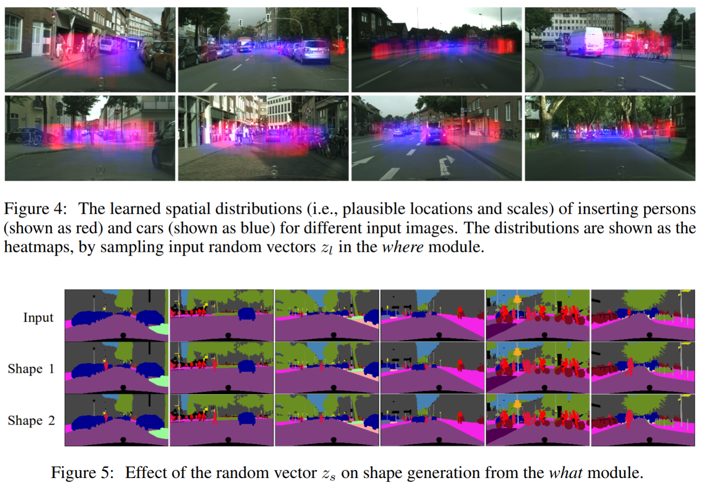
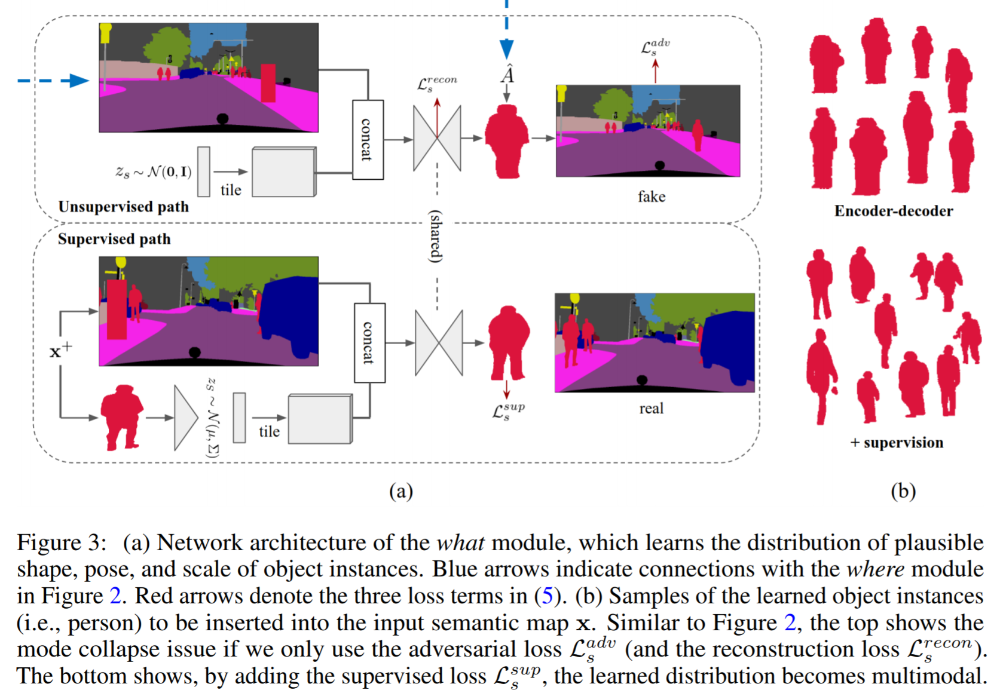
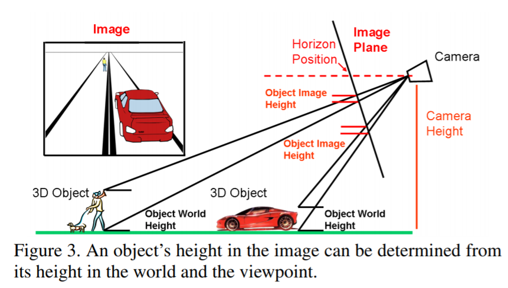
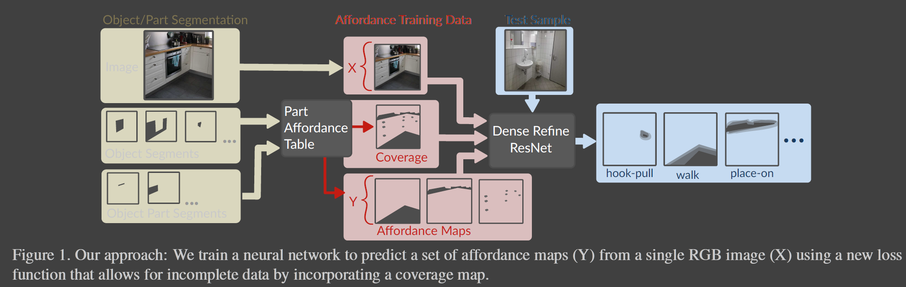
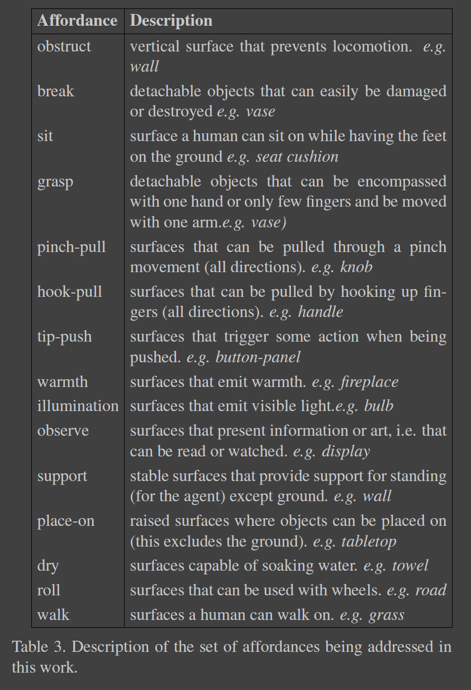
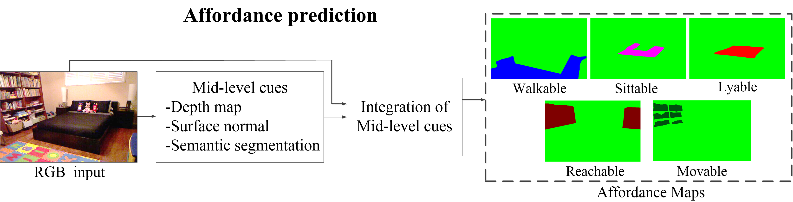
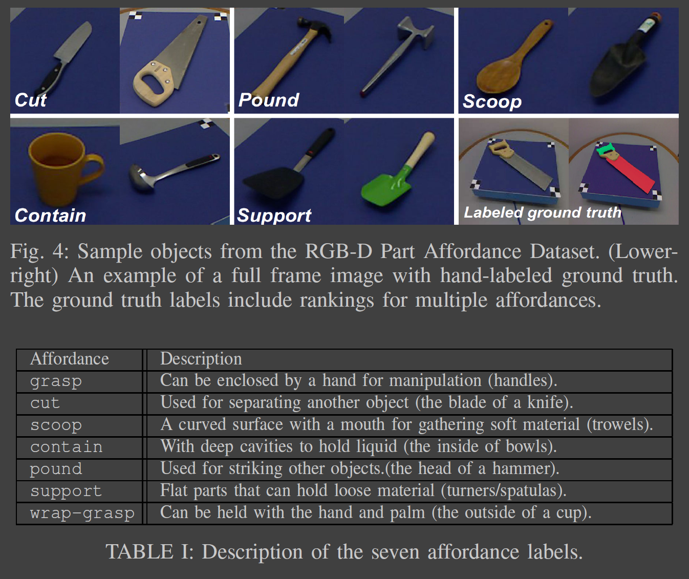

Feb
[2018 NIPS] Context-Aware Synthesis and Placement of Object Instances →
| input/output | where/what |
|---|---|
 |  |
| where | what |
 |  |
Input: semantic segmentation map + category (person/car)
Output: 2D bbox + shape outline
Method:
[2018 ECCV] Compositing-aware Image Search →
| input/output | outline |
|---|---|
 |  |
Input: RGB image + category + location + object library
Output: ordered segments (no background context required at test time)
Method (matching only):
Network:
- f1 = MCB(resnet50(bg), embed(word)), f2 = MCB(resnet50(fg), embed(word)), score = |f1 - f2|^2
- triplet_loss = max(0, score_p - score_n + a)
Dataset:
images: MS-COCO/PASCAL VOC/ADE20K
categories (*8): person, car, boat, dog, plant, bottle, chair, painting
Aug1: randomly expand the bbox, change aspect ratio
Aug2: triple extension (+7%)
- semantic context: L2 distance of background context ResNet50 feature
- shape information: IoU of masks
Blending: Poisson blending
Baselines:
- RealismCNN: rank by realism score of Poisson-blended result
- Shape feature: IoU score of center-aligned bboxes
- Classification feature: feature from classification (commonly used for image retrieval)
Evaluation:
- 10 bg/category, 1 box/bg, 100-400 fg/category, 16-140 gt/bg
- metric: mAP
[2007 SIGGRAPH] Photo Clip Art →
| UI | outline | camera pose |
|---|---|---|
 |  |  |
Input: RGB image + category + location + object library + horizon (labeled)
Output: ordered segments + blending
Method:
Matching
- camera orientation: pose = (3D camera height, 2D horizon), from >=2 objects with known 3D heights [Assume: labeled horizon & image plane roughly ⊥ ground & insert on ground & small roll]
- lighting: X2-distance of LAB histogram of (building, sky, ground)
- local context: summed-squared-distance of surrounding pixels
- others...
Blending
- segmenting --> shade transfer --> blending
Application: decorating & enrich the scene (e.g. architectural renderings)
Limitation: won't work indoors... (assumption for camera pose x)
Jan
1.14 TODO
P(B, C | I) = P(C | I) P(B | C, I)后者：可以在segmentation产生的heatmap上枚举所有包围盒B，取内部heat值最大的B为选取对象（虽然之前的paper不是这样实现的）
前者：各个C的heatmap都是normalized的，可能无法直接对比不同C的heatmap
- 一个简单的解决方案是按照其他物体的co-occurrence + 一些heuristic规则进行排序
- 如：场景中有
{desk, laptop, keyboard, wall} - 按照
desk和wall的面积确定mouse和clock的先后顺序 - 但这样还是未完全利用位置信息
P(C | I)P(I | C)P(B | C, I)：- best box：枚举？（无法直接解决）
- heatmap：segmentation mask，每类一个
Useful
[2017 CVPR] Weakly Supervised Affordance Detection ⭐️
通过CNN分割 + Grabcut refine从弱标注（仅key point）的RGB图像中预测affordance map
数据集：CAD120（RGBD，6 affordances / 10K objects / 3K images） + UMD part affordance（ICRA'15，专注于工具部件）


[2017 CVPR] Learning to Segment Affordances ⭐️
A key observation of this work is that affordances tend to pertain to single parts of objects rather than objects as a whole.
In contrast to the presented methods, our approach predicts a larger number of affordances using a novel training method that explicitly makes use of part information. We focus on directly predicting affordances without incorporation any hint of scene geometry.
通过检测object part从RGB图像中预测affordance map（基于规则映射到object part上）
数据集：ADE20K + data augmentation（从大图中随机切一些patch调一调颜色等）

| 15 Affordances (mapped to objects / object-parts)，例如任何形如xx/top的object-part都具有place-on的affordance | Affordance results |
|---|---|
|  |  |
[2017 CVPR] Scene Parsing through ADE20K Dataset
数据集：ADE20K，最大的scene + object + object-part数据集。（RGB，900种scene / 150+类物体 / 很多类part / 20K train + 2K valid + 3K test），来源LabelMe + SUN + Places
[Webpage] [Leaderboard] [Explorer]
- 包含了桌面等object part的标注
- 但trainset中的object part只有一小部分有标注（8K table VS 0.8K tabletop / 1.3K desk VS 33 desktop / 400 countertop）
- 室内 / 室外均有

Others
[2016 ECCV] A Multi-Scale CNN for Affordance Segmentation in RGB Images
By affordance, we mean an object's capability to readily support a certain human action, without requiring precursor actions.
利用3D信息（depth + normal + segmentation）从RGB输入图像中预测affordance map（以像素级别的mask表示，共5种）。这不能通过object label直接映射得到，因为：
- object part: 同一object的不同part的affordance不同，如椅背不sittable
- spatial context: 同一object的affordance受到context影响，如桌下的椅子不sittable
数据集：NYUv2（RGBD，40类indoor物体 / 5种affordance / 1.4K个图），场景复杂有拥挤遮挡
数据标注：先利用RANSAC从RGBD抽平面 + 简单规则（NYUv2自带object label + 平面大小 + 平面高度 + 上方/侧面是否已有其他物体）得粗略结果，再人工修正（AMT）
| 输入输出、pipeline | 5种affordance |
|---|---|
|  |  |

[2017 IROS] Object-Based Affordances Detection with CNN and Dense CRF
利用CNN分割 + CRF精修从RGB输入图像中预测affordance（9种）。
新标数据集IIT-AFF（RGBD，10种物体 / 9种affordance / 8K个图 / 14K个包围盒），来源ImageNet (RGB) + Asus (RGBD) + MultiSense (RGBD)。
其中的support看起来不太符合我们任务要求；display可用于广告推荐但我们目前没有考虑这类情形。
| Object distribution | Affordance distribution | Affordance说明 |
|---|---|---|
 |  |  |

[2015 ICRA] Affordance Detection of Tool Parts from Geometric Features
数据集：（RGBD，17种工具 / 7种affordance / 105个场景 / 1W张图），专注于工具part的affordance（而非家具）
